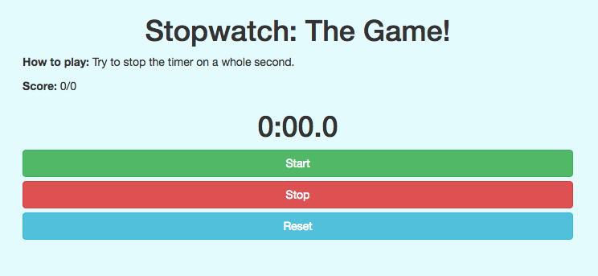

Introduction to Interactive Programming in Python - Week 4
This week teaches us how to create a canvas in CodeSkulptor and how to draw on the canvas. This is the first week where we get to start really interacting with our programs and fully understand the usefulness of event-driven programming.
This week's mini project is building a digital stopwatch and a very simple game where the player tries to stop the stopwatch on a whole second to score points.
A clone of this week's mini project, Stopwatch: The Game!, that I built in JavaScript, HTML, CSS, and Bootstrap.
Canvas Drawing: Most of the projects in this specialization are interactive applications that allow a player to interact with the program through a general user interface (GUI). Therefore it's necessary to understand how to create a canvas where we can draw and display objects such as images, strings, and numbers. When creating a canvas, it's helpful to think about your computer monitor as what it really is: a 2-dimensional grid of pixels whose colors are stored in memory as a frame buffer. Your computer constantly updates the monitor at a frequency determined by its refresh rate. Typically, event-driven programs register a special function called a draw handler that tell the computer what to draw on the canvas each time it updates its buffer. Since computers can update their buffers tens or hundreds of times per second (for example, a 120 Hz monitor handles up to 120 frames per second), humans perceive objects shown on our monitors as being fixed in place or in smooth motion, rather than being constantly updated.
String Processing: Modifying text is an extremely useful application of programming, and Python makes it really easy to do. This week's lecture just scratches the surface of all of the string manipulation that's possible in Python. In addition to this week's lecture, I've also benefitted a lot from the Manipulating Strings chapter of Al Sweigart's Automate the Boring Stuff with Python and the Python docs. Specifically, this week's lecture covered these basic string processing techniques:
Combining Strings: In Python, you can concatenate two strings using the + operator. For example, printing "Hello" + " world" would result in "Hello world".
Characters and Slices: You can get a specific character in a string by specifying its index. For example, if myVariable = "Hello world!", we could get the "H" character by calling myVariable[0]. Note that indexing starts at 0, rather than 1, in Python (this is because 0 is the most logical starting point if you consider that computers store all numbers as bits, and the number 0 is represented as 00000000 in memory). Calling myVariable[:] would return the entire "Hello world!" string, whereas myVariable[2:] would return the entire string starting from the index position 2. You can also use negative numbers as index positions, such as myVariable[-1], which would return the "!" character.
Converting Strings: To convert the string representation of a number, such as "7", into an integer, use Python's "int" built-in function. For example, int("7") would return the integer 7.